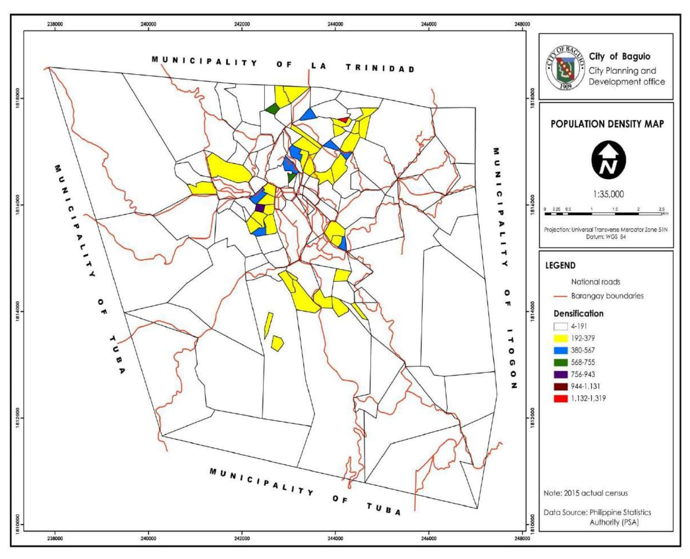

Poverty Incidence
In general, poverty incidence in highly urbanized cities (HUCs) was relatively lower compared to many of the provinces in the country. In HUCs within NCR, the following cities registered significant increases in their poverty incidence among families from 2018 to 2021: Cities of Malabon, Valenzuela, Las Piñas, Makati, Muntinlupa, Parañaque and Taguig. For HUCs outside NCR, the Cities of Lapu-Lapu, Butuan, and Mandaue registered the highest significant increase, while Zamboanga City was the only HUC with a significant decrease from 6.5 percent in 2018 to 3.3 percent in 2021. (PSA, 2021)
Baguio Poverty Incidence
The 1st Semester 2018 official Poverty Statistics released by the Philippine Statistics Authority(PSA) shows that Baguio City has a poverty incidence of 2.8 among families or 2, 640 households were within the poverty threshold. The 2018 annual Per Capita Poverty threshold (in PHP) is 11,820, or a family needs Php 47,280 annually to sustain the basic needs of an average household size of 4. (PSA, 2018)
